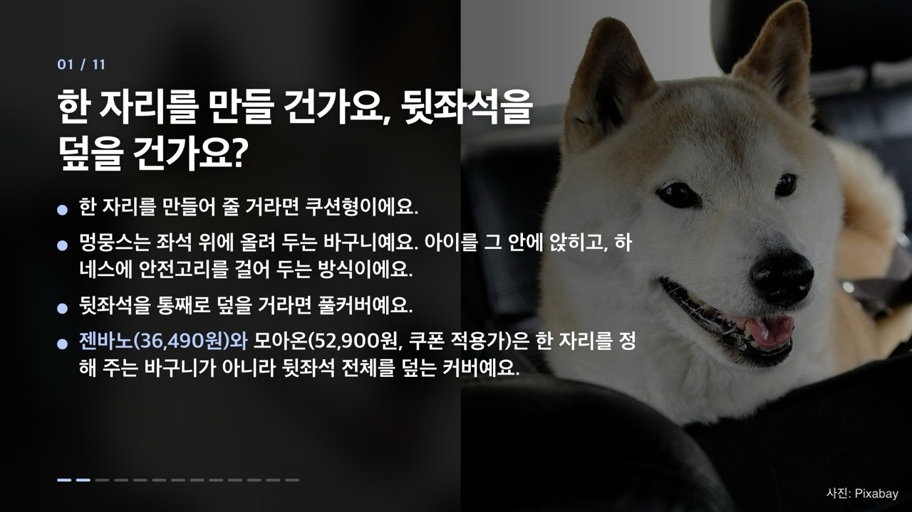

이 게시물은 쿠팡 파트너스 활동의 일환으로, 이에 따른 일정액의 수수료를 제공받습니다.
산책 뒤 뒷좌석이 털투성이라면, 애견카시트 41,610원
산책 다녀와서 차에 태우면, 내릴 때쯤 뒷좌석이 털이랑 발자국투성이가 돼 있죠.
작은 아이를 한자리에 앉혀 두는 쿠션형 카시트는 41,610원(쿠폰 적용가, 상품평 5,562개), 뒷좌석을 통째로 덮는 풀커버는 36,490원부터예요.
둘은 아예 다른 물건이에요. 한 자리에 앉혀 둘 거면 아이 체중으로 사이즈를 고르고, 뒷좌석을 덮을 거면 우리 차 뒷좌석 폭과 보드 두께를 봐야 해요.

한 자리를 만들 건가요, 뒷좌석을 덮을 건가요?
한 자리를 만들어 줄 거라면 쿠션형이에요.
멍뭉스는 좌석 위에 올려 두는 바구니예요. 아이를 그 안에 앉히고, 하네스에 안전고리를 걸어 두는 방식이에요.
뒷좌석을 통째로 덮을 거라면 풀커버예요.
젠바노(36,490원)와 모아온(52,900원, 쿠폰 적용가)은 한 자리를 정해 주는 바구니가 아니라 뒷좌석 전체를 덮는 커버예요.
풀커버 둘 중에선, 대형견이 뒷좌석 위에서 버틸 단단한 바닥이 필요하다면 모아온이 후보예요. 다만 바닥을 받치는 보드의 두께 표기가 상세 안에서 엇갈려서, 판매자 확인이 먼저예요.
이 조건이면: 6~13kg 작은 아이를 좌석 위 한 자리에 → 멍뭉스 쿠션형 L(11월 6일 확인 가격 41,610원 쿠폰 적용가, 바뀔 수 있음)
이 조건이면: 뒷좌석 전체를 털·흙에서 지키기 → 젠바노 확장형 접이식 풀커버(11월 6일 확인 가격 36,490원, 바뀔 수 있음)
링크는 글 아래쪽에 있어요.
쿠션형이라면, 아이 몸무게는 사이즈표 어느 칸인가요?
멍뭉스 상세 이미지의 사이즈별 권장 체중표예요(바깥 크기 / 안쪽 크기 / 권장 체중).
- M: 55×50cm / 35×30cm / ~7kg
- M2: 62×55cm / 42×35cm / 5~9kg
- L: 70×60cm / 50×40cm / 6~13kg
- L2: 80×50cm / 60×30cm / 7~21kg
- XL: 120×50cm / 100×30cm / 12~40kg (뒷좌석 전용)
이 글의 41,610원은 L 기준이에요. 13kg을 넘는 아이라면 L은 빼고 L2나 XL 칸을 보세요.
칸을 골랐으면, 아이가 몸을 말고 누운 길이가 '안쪽 크기'에 들어가는지 줄자로 재 보세요.
판매자 FAQ는 앞좌석에는 보통 M·M2·L 정도까지, 뒷좌석은 전 사이즈를 쓸 수 있다고 안내해요. FAQ에 에어백 이야기는 없지만, 앞좌석은 에어백이 있는 자리라 이 글은 뒷좌석 사용을 기준으로 봐요. 앞좌석에 둘 거라면 차량 설명서의 에어백 안내를 먼저 확인하세요.

좌석에는 어떻게 걸어 두나요?
- 멍뭉스: 시트 헤드 스트랩, 시트 고정 스트랩, 시트 틈에 끼우는 고정 지지대, 안전벨트를 끼우는 지지대까지 4가지로 고정하고, 바닥에는 미끄럼 방지 패드가 있다고 나와요. XL은 시트 고정 스트랩 없이 고정 지지대가 4개예요. 하네스에 거는 길이 조절 안전고리는 M~L2가 2개, XL이 3개예요.
- 젠바노: '3단 큰 지지판', '합금 고리'라는 설명은 있지만, 좌석에 거는 방법은 상세에서 찾지 못했어요.
- 모아온: 구성품에 스트랩과 안전벨트 클립이 들어 있다고 해요.
멍뭉스 상세에도 '아이가 힘이 세면 포함된 안전고리로 부족할 수 있다'는 안내가 있어요. 고정 장치가 있다고 해서 사고 때 안전을 보장한다는 뜻은 아니에요.
급정거 때 안전을 보고 고르는 거라면 이 비교만으로는 부족해요. 이번 자료로는 세 제품 모두 공인 충돌 시험·안전 인증을 확인하지 못했거든요.
털 묻은 카시트, 세탁기에 돌려도 되나요?
멍뭉스는 손세탁만 안내해요. 겉감과 속이 분리되지 않고 방석만 분리되며, 30도 정도 미지근한 물에 빨고 건조기는 쓰지 말라는 설명이에요.
모아온은 PU 가죽 생활방수라 오염은 물티슈로 닦으라고 하고, 젠바노 세탁 방법은 찾지 못했어요.
털이 많이 빠지는 아이라서 세탁기에 돌리고 싶은 집이라면 멍뭉스는 맞지 않아요. 젠바노·모아온도 세탁기를 써도 되는지는 확인하지 못했으니, 판매자 답을 듣고 고르세요.
풀커버라면, 129cm·132cm는 어디를 잰 숫자인가요?
- 젠바노: 40×129×68cm, 승용차·SUV용이에요. 600D 옥스포드 원단, TPU 방수층, 스펀지, 하드보드, 논슬립 뒷면 순서로 쌓였고, 통풍 메쉬가 있다는 설명이에요.
- 모아온: 펼친 도면에 132cm·57cm 등이 나오고, 접으면 44×66×8.5cm예요. 세단·SUV·MPV에 맞는다고 소개해요. '40~50kg 대형견도 처짐 없이'라는 문구도 있지만, 회사 자체 시험이라고 밝히고 있어요.
주문 전에 우리 차 뒷좌석 폭을 줄자로 재 두고, 129cm·132cm가 어느 부위를 잰 숫자인지 판매자에게 물어 그 폭과 맞춰 보세요. 모아온은 보드 두께도 상세 안에서 '10mm'와 '6mm'가 함께 나와 서로 다르니, 어느 쪽인지 같은 문의에 넣어 두세요.
값과 상품평 수는 11월 6일 쿠팡 표시값 기준이라, 그 뒤로 달라졌을 수 있어요. 크기·체중·구조는 판매 페이지와 상세 이미지에 나온 표기이고, 직접 써 본 후기는 아니에요.
멍뭉스 41,610원은 L 쿠폰 적용가(쿠폰 전 52,600원), 모아온 52,900원도 쿠폰 적용가(파트너스 화면에는 55,000원)예요. 링크를 열면 쿠폰이 붙은 값인지부터 보세요.
멍뭉스 쿠션형 애견 카시트 가격·후기 — 가격·구매처 보기
젠바노 확장형 접이식 강아지 카시트 풀커버 가격·후기 — 가격·구매처 보기
모아온 대형견 하드보드 풀커버 가격·후기 — 가격·구매처 보기
#애견카시트 #강아지카시트 #강아지차량용품 #대형견카시트 #뒷좌석커버